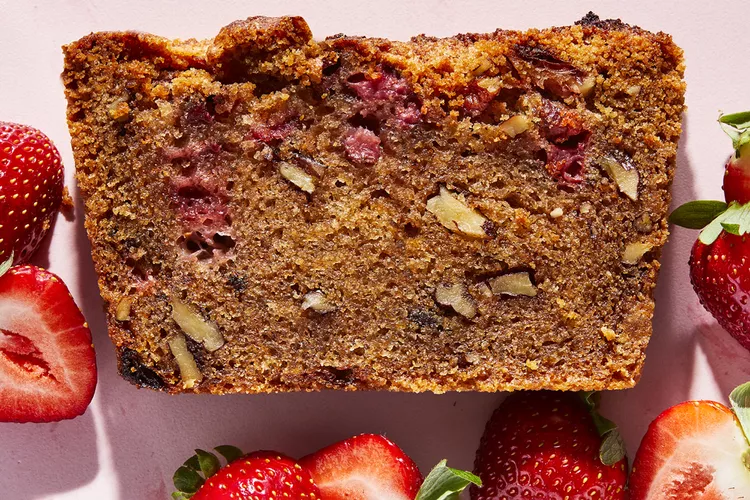

It will be the hit of your spring baking.

One of the best harbingers of spring is the sweet and bright strawberry. The days get longer, the sun shines brighter, and appetites start to change. And soon enough, beautiful ruby red strawberries start to pop up in gardens and grocery stores across the world.
The beloved berry is commonly enjoyed on its own, in a fruit smoothie, or on a fruit platter. But there are plenty of recipes that utilize the berry and make it the star of the show. From springy salads and easy dinners to a plethora of desserts like cakes, pies, tortes, and jams, the strawberry deserves to take center stage in your kitchen this spring.
When thumbing through the Allrecipes strawberry annals, I came upon a recipe I have never heard of. Instantly intrigued, I read through the over 1,000 reviews—most of which sang its praises. It looks like a strawberry version of banana bread, or a lemon loaf—one of those tasty sweets that are just as delicious with a cup of coffee for breakfast as they are served with ice cream for dessert.
And now that strawberries are starting to ripen, I am bookmarking this recipe and making it as soon as I can get my hands on a carton of fresh and delicious strawberries.
This simple dessert comes together in no time.

Follow Us
About Us
Privacy Policy
Terms of Use
Careers
Manage your Magazine Subcription
Editorial Process
Product Vetting
Advertise
Contact
Magazine Subscription Help